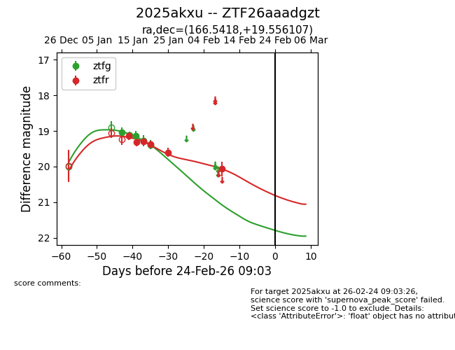
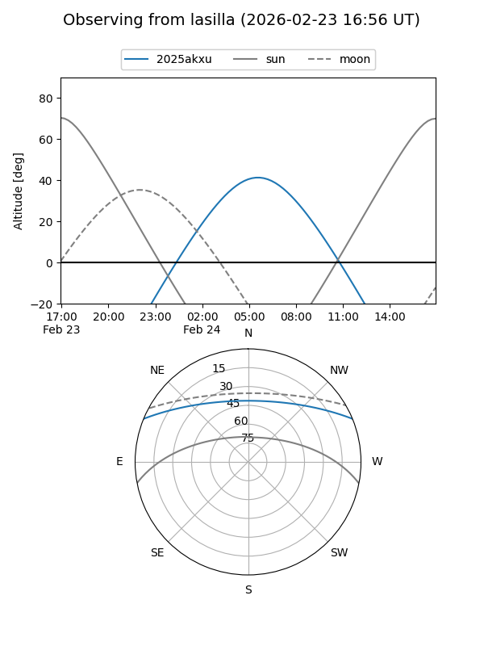
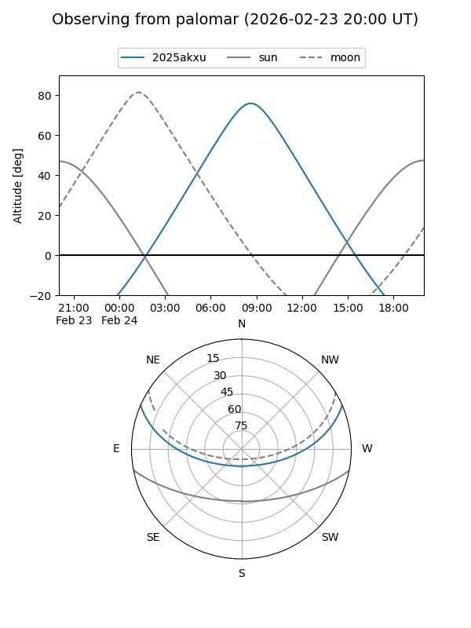
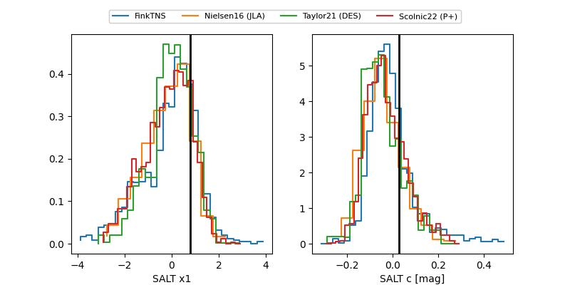

2025akxu
Target 2025akxu at 2026-01-12 09:55
Aliases and brokers:
FINK: link
Lasair: link
ALeRCE: link
TNS: link
YSE: link
alt names
ZTF26aaadgzt (ztf,fink_ztf)
2025akxu (tns,yse)
Coordinates:
equatorial (ra, dec) = 166.5418,+19.55611
equatorial (HMS+DMS) = 11:06:10.03,+19:33:21.98
galactic (l, b) = (224.7268,+64.73635)
Flags:
Photometry:
last ztfg=19.04
1 ztfg detections
Lightcurve

Visibility


Additional plots
